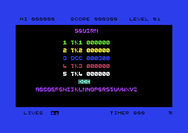

<meta charset="utf-8">
<meta name="viewport" content="width=device-width, initial-scale=1">
<title>Squirm</title>
<link rel="preconnect" href="https://fonts.googleapis.com">
<link rel="stylesheet" href="https://fonts.googleapis.com/css2?family=Lato:wght@400;700;900&family=IBM+Plex+Mono:wght@400;500&display=swap">
<style>
:root{
  --bg:#23262d; --paper:#e9e7e1; --surface:#ffffff; --surface-2:#f1efea; --line:#d5d3cc; --line-soft:#e0ded8;
  --ink:#2f3136; --ink-soft:#55585f; --ink-mute:#80838a;
  --link:#1f5fa8; --link-hover:#154480; --accent:#1f5fa8;
  --amber:#c25a00; --cyan:#1f5fa8; --coral:#d04a3a; --green:#2a8a4a; --violet:#4a5bd6; --hl:#fff0c2;
  --chip:#2f3136; --chip-ink:#ffffff;
  --c64blue:#40318d; --c64grey:#686868;
  --fd:'Lato',system-ui,sans-serif; --fb:'Lato',system-ui,sans-serif; --fm:'IBM Plex Mono',ui-monospace,Menlo,monospace;
  --col:1080px; --gx:68px; --fs:17px; --lh:1.6; --hw:900; --h1:46px; --h2:26px; --sy:48px; --pp:26px; --r:10px;
  --plate-shadow:0 1px 2px rgba(0,0,0,.05),0 4px 14px rgba(0,0,0,.05);
}
*{box-sizing:border-box}
html{background:var(--bg);min-height:100%}
body{background:var(--paper);color:var(--ink);font-family:var(--fb);font-size:var(--fs);line-height:var(--lh);max-width:var(--col);margin:0 auto;min-height:100vh;padding:0 0 4rem}
h1,h2,h3{font-weight:var(--hw);letter-spacing:-.01em;text-wrap:balance;color:var(--ink);margin:0}
.wrap{padding:0 var(--gx)}
.hero{padding:48px var(--gx) 8px;text-align:left}
.eyebrow{font-family:var(--fm);font-size:12px;letter-spacing:.08em;text-transform:uppercase;color:var(--ink-mute);margin:0 0 10px}
.hero h1{font-size:var(--h1);line-height:1.15;letter-spacing:-.02em;margin:0 0 14px}
.hero .sub{margin:0 0 .6em;color:var(--ink-soft)}
section{padding:var(--sy) 0 24px}
section:last-of-type{border-bottom:none}
.fig{font-family:var(--fm);font-size:12px;letter-spacing:.08em;text-transform:uppercase;color:var(--ink-mute);margin:0 0 10px}
h2.t{font-size:var(--h2);margin-bottom:12px}
.lede{color:var(--ink-soft);margin:0 0 30px}
.plate{background:var(--surface);border:1px solid var(--line);border-radius:var(--r);padding:var(--pp);box-shadow:var(--plate-shadow)}
.cap{font-size:14px;color:var(--ink-mute);margin-top:14px;line-height:1.55}
.cap b{color:var(--ink);font-weight:700}
code{font-family:var(--fm);font-size:.82em;background:var(--chip);color:var(--chip-ink);border-radius:4px;padding:2px 6px;overflow-wrap:break-word;-webkit-box-decoration-break:clone;box-decoration-break:clone}

.sq-bar{display:flex;flex-wrap:wrap;gap:8px;margin:0 0 14px;align-items:center}
.sq-btn{font:inherit;font-family:var(--fm);font-size:12.5px;background:var(--surface);border:1px solid var(--line);border-radius:6px;padding:5px 11px;color:var(--ink);cursor:pointer;line-height:1.3}
.sq-btn:hover{border-color:var(--ink-mute)}
.sq-btn[aria-pressed="true"]{background:var(--accent);border-color:var(--accent);color:#fff}
.sq-btn:disabled{opacity:.45;cursor:default}
.sq-lbl{font-family:var(--fm);font-size:12px;color:var(--ink-mute);margin-right:2px}
.sq-pics{display:grid;grid-template-columns:repeat(3,minmax(0,1fr));gap:14px}
.sq-pics.sq-two{grid-template-columns:repeat(2,minmax(0,1fr))}
.sq-pics figure{margin:0}
.sq-pics img{display:block;width:100%;height:auto;image-rendering:pixelated;border-radius:4px}
.sq-pics figcaption{font-size:13px;color:var(--ink-mute);margin-top:6px;line-height:1.45}
.sq-stack{position:relative;width:100%;max-width:768px}
.sq-stack canvas{display:block;width:100%;height:auto;image-rendering:pixelated;border-radius:4px}
.sq-stack canvas+canvas{position:absolute;left:0;top:0;pointer-events:none;image-rendering:auto}
.sq-tbl{border-collapse:collapse;font-size:14px;width:100%;margin:4px 0 0}
.sq-tbl th,.sq-tbl td{text-align:left;vertical-align:top;padding:5px 8px;border-bottom:1px solid var(--line-soft)}
.sq-tbl th{font-weight:700;color:var(--ink-soft)}
.sq-tbl td.sq-n,.sq-tbl th.sq-n{font-family:var(--fm);font-size:13px;white-space:nowrap;text-align:right}
.sq-tbl tr.sq-on td{background:var(--hl)}
.sq-wrapx{overflow-x:auto}
.sq-out{font-family:var(--fm);font-size:13px;color:var(--ink);margin:12px 0 0;line-height:1.55;white-space:pre-wrap}
.sq-log{font-family:var(--fm);font-size:12.5px;line-height:1.5;margin:12px 0 0;padding:10px 12px;background:var(--surface-2);border-radius:6px;min-height:7.5em;white-space:pre-wrap}
.sq-split{display:grid;grid-template-columns:minmax(0,1fr) minmax(0,1fr);gap:20px;align-items:start}
.sq-big{font-family:var(--fm);font-size:28px;letter-spacing:.06em;margin:8px 0 0}
.sq-keys{display:grid;grid-template-columns:repeat(8,minmax(0,1fr));gap:4px;margin:6px 0 0}
.sq-keys button{font-family:var(--fm);font-size:12px;padding:8px 0;border:1px solid var(--line);border-radius:6px;background:var(--surface-2);color:var(--ink);cursor:pointer}
.sq-keys button[aria-pressed="true"]{background:var(--accent);border-color:var(--accent);color:#fff}
.sq-keys span{font-family:var(--fm);font-size:11px;color:var(--ink-mute);text-align:center}
.sq-bits{font-family:var(--fm);font-size:15px;margin:12px 0 0}
@media (max-width:720px){:root{--gx:16px;--h1:34px;--pp:16px}.sq-pics,.sq-pics.sq-two,.sq-split{grid-template-columns:1fr}.sq-keys{grid-template-columns:repeat(4,minmax(0,1fr))}}
</style>
<!-- tabs -->
<header class="hero">
  <p class="eyebrow">1984 · Mastertronic</p>
  <h1>Squirm</h1>
  <p class="sub">What the code does that the game never tells the player: a level counter that loops, a death that sounds different on each sound chip, a keyboard that plays, and the remains of the programming tool the game was written with.</p>
</header>
<main class="wrap">

<section id="level-ten">
  <p class="fig">01 · The level counter</p>
  <h2 class="t">Bug: level 19 is followed by level 10</h2>
  <p class="lede">The game counts levels on the screen, digit by digit, and gets the carry from 9 wrong. After level 19 the number goes back to 10 and runs 10 to 19 for ever.</p>
  <div class="plate">
    <div class="sq-bar">
      <button type="button" class="sq-btn" id="sq-l-one">Next level</button>
      <button type="button" class="sq-btn" id="sq-l-ten">Ten levels</button>
      <button type="button" class="sq-btn" id="sq-l-reset">Start again</button>
    </div>
    <p class="sq-big" id="sq-l-now"></p>
    <p class="sq-out" id="sq-l-list"></p>
    <p class="cap">Each press runs the game's own instructions at <code>$3887</code>-<code>$389A</code>, taken from the listing, on a model of the C64's processor, the 6502. They work on the two digits of LEVEL on the top line (<code>$0423</code> and <code>$0424</code>). In the VICE emulator, with the level number set to 19 by hand, the next level showed 10. Numbers written with a $ are hexadecimal, counting in sixteens; those in dark boxes are addresses in the C64's memory, and each opens the Source code tab there.</p>
  </div>
  <p>The level number exists only as two characters on the top line, digits drawn light on dark, whose character codes run from <code>$B0</code> for 0 to <code>$B9</code> for 9. At the end of a level, <code>level_complete</code> adds 1 to the units digit (<code>$3887</code>). When the units reach <code>$BA</code>, one past 9, it writes <code>$B1</code>, a 1, into the tens digit and <code>$B0</code> into the units. It should have added 1 to the tens. So every time the units pass 9, the tens become 1. 09 becomes 10 correctly, and 19 becomes 10 again.</p>
  <p>Only the number on the screen is wrong. The maze and the speed come from <code>maze_number</code> and <code>step_delay</code>, which count on correctly, so the 20th level is drawn and played as the 20th while the top line says 10 (<a href="index.html#levels">How it works</a>).</p>
</section>

<section id="death-sound">
  <p class="fig">02 · The death's noise</p>
  <h2 class="t">Bug: the death sounds different on the two kinds of sound chip</h2>
  <p class="lede">The fall lowers the noise's pitch by reading it back from the sound chip, which cannot be read back. On the older chip the pitch jumps to the top after one step. On the newer one it falls as the programmer meant.</p>
  <div class="plate">
    <div id="sq-death"></div>
    <div class="sq-wrapx"><table class="sq-tbl" id="sq-death-tbl"></table></div>
    <p class="cap">The sound player runs the game's own <code>lose_life</code> (<code>$3A7D</code>) on a model of the C64's processor, with the chip's data lines kept as the VICE emulator keeps them. They hold the last value written for 7,424 of the processor's cycles on a 6581 and 663,552 on an 8580; the processor runs about a million cycles a second. The table is what each <code>DEC $D401</code> wrote there. In VICE, stopping the machine after each one showed the same values, on an 8580 and, from a fresh start, on a 6581.</p>
  </div>
  <p><code>lose_life</code> switches voice 1 of the SID, the C64's sound chip, to noise at a pitch of <code>$14</code>. Then it lowers the pitch once for each row the player falls, three jiffies (sixtieths of a second) apart, with one instruction: <code>DEC $D401</code> (<code>$3A8F</code>). DEC reads a byte, takes 1 from it, and writes it back. But the SID's pitch registers, the chip's settings, can only be written. A read of one gets whatever is still on the chip's data lines, the wires that carry each byte to and from the chip, from the last write, until that value fades away.</p>
  <p>The C64 was made with two models of the SID over the years, the 6581 and later the 8580, and VICE emulates both. The first DEC comes a few cycles after the write of <code>$14</code>, so on both chips it reads <code>$14</code> and writes <code>$13</code>. The next comes three jiffies, about 49,000 cycles, later. VICE's 6581 has let the value fade to 0 by then, so DEC writes 0 minus 1. A byte cannot go below 0, so that wraps round to <code>$FF</code>, the highest pitch, and every row after does the same. VICE's 8580 holds the value for much longer, so each DEC reads back what the last one wrote and the pitch steps down a row at a time. How long a real chip holds the value varies from one chip to the next. The two lengths here are VICE's.</p>
</section>

<section id="keyboard">
  <p class="fig">03 · The keyboard</p>
  <h2 class="t">Secret: five keys of the keyboard play the game</h2>
  <p class="lede">The game only reads the joystick, but the keys 1, ←, CTRL, 2, and SPACE move the player and fire as well.</p>
  <div class="plate">
    <div class="sq-wrapx"><table class="sq-tbl">
      <thead><tr><th>Key</th><th>Line of <code>$DC01</code></th><th>Acts as</th></tr></thead>
      <tbody>
        <tr><td>1</td><td class="sq-n">bit 0</td><td>up</td></tr>
        <tr><td>← (top left)</td><td class="sq-n">bit 1</td><td>down</td></tr>
        <tr><td>CTRL</td><td class="sq-n">bit 2</td><td>left</td></tr>
        <tr><td>2</td><td class="sq-n">bit 3</td><td>right</td></tr>
        <tr><td>SPACE</td><td class="sq-n">bit 4</td><td>fire: stops the player, and starts a game from the title</td></tr>
        <tr><td>C=, Q, RUN/STOP</td><td class="sq-n">bits 5 to 7</td><td>nothing alone; held with a direction, they stop it counting</td></tr>
      </tbody>
    </table></div>
    <p class="cap">The keyboard's row 7, from the C64's keyboard matrix. In VICE, holding 2, 1, CTRL, and ← for a quarter of a second each moved the player right, up, left, and down, and SPACE started a game. The widget on <a href="index.html#controls">How it works</a> runs the game's own code on any mix of these lines.</p>
  </div>
  <p>The C64 reads its keyboard as a grid of eight rows and eight columns. One chip, CIA 1, one of the C64's two input and output chips, drives a row with one port and reads the columns with its other port, <code>$DC01</code>. Joystick port 1 is wired to that same input port, on bits 0 to 4. The KERNAL, the C64's built-in system code, leaves row 7 of the keyboard selected between its checks of the keys, and Squirm never changes it. So each of row 7's first five keys pulls down the same line as a joystick direction or fire, and <code>move_player</code> (<code>$306E</code>), which reads <code>$DC01</code>, cannot tell the two apart. The game also wants each value exact. A key from bits 5 to 7, held with the stick, turns a direction into a value the game does not know, and the player carries straight on.</p>
</section>

<section id="new-hi">
  <p class="fig">04 · The high score</p>
  <h2 class="t">Bug: a new high score wipes the score off the top line</h2>
  <p class="lede">The moment a new best score is entered, the top line shows it as HI and puts SCORE back to 000000.</p>
  <div class="plate">
    <div class="sq-pics sq-two">
      <figure><figcaption>A score of 300 climbing the table: the top line still says SCORE 000300.</figcaption></figure>
      <figure><figcaption>At the top: HI 000300, and SCORE 000000.</figcaption></figure>
    </div>
    <p class="cap">Both from the VICE emulator, after a game ended with its score set to 300 by hand and the name DCC entered.</p>
  </div>
  <p>The score is never stored anywhere but the screen (<a href="index.html#hiscores">How it works</a>). When a score reaches first place, <code>enter_name</code> copies its digits into the stored pattern the top status line is drawn from (<code>$0FA4</code>). Then it redraws the status lines from those patterns (<code>draw_status_lines</code>, called at <code>$3258</code>) to show the new HI. The same pattern holds SCORE as 000000, ready for a new game, so the redraw puts that on the screen too. The score the player just made stays on the screen only as the new HI.</p>
</section>

<section id="bonus-tune">
  <p class="fig">05 · The bonus tune</p>
  <h2 class="t">Secret: from level 9, the bonus run plays part of the title tune</h2>
  <p class="lede">The bonus tune is written to last exactly as long as the run on the first levels. The runs get faster, the tune does not, and from level 9 the routine that plays it reads on past its end into the title tune.</p>
  <div class="plate">
    <div id="sq-bonus"></div>
    <canvas id="sq-b-cv" width="1100" height="210" style="display:block;width:100%;height:auto;margin-top:12px" aria-label="The 255 notes of the bonus tune, with how far the run gets at each speed"></canvas>
    <p class="cap" id="sq-b-cap">Each bar is one of the 255 notes <code>bonus_tune_step</code> (<code>$3D5C</code>) plays, its height the pitch, a gap a silent note. The blue ones are <code>bonus_tune</code> (<code>$3DB8</code>), the orange ones the first bytes of <code>title_tune_voice1</code> (<code>$3E80</code>), which follow it in memory. The marks show how many notes a run of 901 jiffies (sixtieths of a second) plays at each speed. The sound player runs the game's own code, for a run at six jiffies a pass and at four.</p>
  </div>
  <p><code>bonus_tune_step</code> (<code>$3D5C</code>) plays one note each pass of the bonus run, each time round the loop that moves the player. It counts its place from 0 to 254 before it starts again (<code>$3D66</code>). The table at <code>$3DB8</code> holds 151 notes and then 49 zeros, which are silent. The 200 bytes after it are the title tune's two voices. Notes 200 to 254 are therefore the first 55 bytes of the title tune's first voice.</p>
  <p>The run lasts 901 jiffies whatever the level, and each pass waits as long as it does in play (<code>step_delay</code>). On the first four levels a pass is six jiffies, so the run has 151 passes, one for each note of the tune. On levels 5 to 8 a pass is five jiffies, so the run has 181 passes. The tune ends, and the last two and a half seconds of the run are silent. On levels 9 to 12 a pass is four jiffies, and the run has 226 passes. After more than three seconds of silence, the run plays the rising notes of the title tune's opening. From level 13 the run outlasts all 255 notes, and the tune starts again.</p>
</section>

<section id="worm-test">
  <p class="fig">06 · The worms' test</p>
  <h2 class="t">Secret: an older version of the worms could not step onto the player</h2>
  <p class="lede">The test a worm makes before each step was rewritten, and the old one is still in the code behind a jump. It refused the player's cell, so a worm could only catch a player who ran into it.</p>
  <div class="plate">
    <div class="sq-wrapx"><table class="sq-tbl" id="sq-wt-tbl"></table></div>
    <p class="cap">Both tests run on the model of the 6502, with the worm's next cell holding each character in turn. One is <code>cell_is_free</code> (<code>$3C93</code>), the test the game uses. The other is <code>old_cell_check</code> (<code>$32D5</code>), started with the low byte of the cell's address already loaded, as the instruction that the jump wrote over would have done. 0 means the worm may move there.</p>
  </div>
  <p>Every worm's step ends with a call of <code>try_worm_step</code> (<code>$32EF</code>), which ends with a jump to <code>$32D2</code>. There a jump instruction (<code>JMP</code>, three bytes) sends it on to <code>cell_is_free</code> (<code>$3C93</code>), at the far end of the program. Those three bytes were written over the start of the older test. The rest of the old test is still there, from <code>$32D5</code> to <code>$32EE</code>. It reads the cell and takes a space (<code>$20</code>) or an egg (<code>$46</code>) as free. The new test adds one comparison, with the player's character <code>$51</code>.</p>
  <p>With the old test the worms went round the player. The main loop only checks the cell the player moves into, so a player could die only by running into a worm. With the new one, a worm may crawl onto the player. The worms move before the player in each pass, so a player that does not move off the cell in the same pass dies there.</p>
</section>

<section id="level-25">
  <p class="fig">07 · The speed</p>
  <h2 class="t">From level 25, the game stops waiting</h2>
  <p class="lede">Each cycle of four levels takes a jiffy off the main loop's wait. Six cycles take it to nothing, and from then on the game runs as fast as the processor can.</p>
  <div class="plate">
    <div class="sq-bar">
      <label class="sq-lbl" for="sq-s-lv">Level</label>
      <input type="range" id="sq-s-lv" min="1" max="32" value="1" style="flex:1;max-width:420px;accent-color:var(--accent)">
    </div>
    <p class="sq-out" id="sq-s-out"></p>
    <p class="cap">The level's <code>step_delay</code> as the game counts it: <code>$3BAF</code> sets <code>$FA</code>, and <code>$3A72</code> adds 1 each time the stage counter reaches 5 and goes back to 1. Beside it is what the wait at <code>$3C56</code> makes of the value. The wait stores it in <code>$A2</code>, which the KERNAL's interrupt routine, run by a timer, adds 1 to 60 times a second. Then it loops while <code>$A2</code> is <code>$80</code> (128) or more.</p>
  </div>
  <p><code>step_delay</code> (<code>$2689</code>) starts at <code>$FA</code>, which is 250, six short of 256. The wait lasts until <code>$A2</code> counts past <code>$FF</code> (255) to 0. At level 25 the value reaches <code>$00</code>, which is below <code>$80</code> already, and the loop goes straight through. A pass then takes only as long as its own work, many times faster than the ten passes a second of the first level. The value goes on rising every four levels, but the main loop would only wait again at <code>$80</code>, more than 500 levels later.</p>
</section>

<section id="assembler">
  <p class="fig">08 · The assembler</p>
  <h2 class="t">The tape carries the menu of the assembler the game was written with</h2>
  <p class="lede">The file on the tape is a plain copy of memory from <code>$0801</code> to <code>$3F47</code>. Nearly 2,000 bytes after its first line are most of another program: the BASIC menu of the CBM 64 Assembler, by Derek Bush and Peter Holmes, 1983.</p>
  <div class="plate">
    <div class="sq-log" id="sq-basic" style="max-height:24em;overflow:auto"></div>
    <p class="cap">Read by the page from <code>$084C</code> to <code>$0F9F</code> of the listing, line by line along the BASIC program's own links, with BASIC's keywords spelt out and the colour and cursor codes left out. The game never reads these bytes.</p>
  </div>
  <p>An assembler turns a programmer's instructions, written as short words, into the machine code the processor runs. This one has a menu written in BASIC, the programming language built into the C64. A BASIC program on the C64 starts at <code>$0801</code> and is a chain of lines, each starting with the address of the next. The game's own BASIC is one line, <code>10 SYS 15133</code>. SYS starts machine code at an address, here 15133, which is <code>$3B1D</code>. The chain ends two bytes after that line. The bytes after it, up to <code>$0F9F</code>, were simply in memory when the game was saved. They are lines 15 to 340 of the assembler's menu, with its title page, its error messages, and the line-by-line entry routine that calls the assembler's machine code with <code>SYS 52113</code> and <code>SYS 51972</code>. Just before line 15 are the words "2.03/06-07-83", the end of a version and a date.</p>
  <p>The character set, the 256 shapes the screen's characters are drawn from, holds more of the same tool. From <code>$2AF0</code> the shapes of the unused characters are really text: the three-letter names of the processor's instructions, such as AND, ROL, and CPX, from the assembler's table of them. Together they show how the game was made. A BASIC menu ran an assembler whose machine code sat high in memory, at <code>$CB04</code> and <code>$CB91</code>, the two SYS addresses. The game's code was assembled above the menu program, and then everything from <code>$0801</code> to the game's end was saved to tape in one go.</p>
</section>

<section id="arrow">
  <p class="fig">09 · The arrow</p>
  <h2 class="t">An arrow is animated 8.6 times a second and never drawn</h2>
  <p class="lede">The game's interrupt routine cycles three characters, the three frames of an arrow, but no screen in the game ever shows them.</p>
  <div class="plate">
    <div class="sq-bar"><button type="button" class="sq-btn" id="sq-a-run" aria-pressed="false">Run the interrupt</button></div>
    <canvas id="sq-a-cv" width="704" height="120" style="display:block;width:100%;max-width:704px;height:auto;image-rendering:pixelated" aria-label="The characters the interrupt animates"></canvas>
    <p class="cap">Drawn from the character set at <code>$2800</code> as the game's own <code>irq_handler</code> (<code>$3CB3</code>) leaves it, run on the model of the 6502 sixty times a second: the arrow (<code>$40</code>-<code>$42</code>), the egg (<code>$46</code>), the two treasures (<code>$47</code>-<code>$4A</code>), and the eight frames of the spinning figure (<code>$4E</code>-<code>$55</code>).</p>
  </div>
  <p>On every seventh interrupt the handler moves the shapes of characters <code>$40</code>, <code>$41</code>, and <code>$42</code> round one place (<code>$3CC4</code>). Nothing in the title, the mazes, the status lines, or the high-score screen holds those characters, and no code writes them to the screen. The arrow costs 24 bytes of shapes, and about 270 of the processor's cycles on every seventh interrupt for as long as the game runs.</p>
</section>

<section id="quirks">
  <p class="fig">10 · Two quirks in the code</p>
  <h2 class="t">A write to the wrong chip, and a call into the middle of an instruction</h2>
  <p class="lede">Neither changes what the player sees.</p>
  <div class="plate">
    <div class="sq-wrapx"><table class="sq-tbl">
      <thead><tr><th>Where</th><th>What the code does</th></tr></thead>
      <tbody>
        <tr><td><code>$3649</code></td><td>The last loop of <code>colour_maze</code> starts with its counter still at <code>$FF</code>, where the loop before left it. So before the 75 cells it means to colour, it writes one colour to <code>$DC4C</code>, past the end of colour RAM. That address belongs to CIA 1, an input and output chip: it is a second copy of the chip's serial data register, which nothing in the game uses.</td></tr>
        <tr><td><code>$2441</code></td><td>The start-up shows the title with a call of <code>$2441</code> (<code>$3B74</code>). That address is not the start of an instruction. It holds the last byte of a branch, <code>$F5</code>, and after it comes the <code>$60</code> of a return. Read from <code>$2441</code>, <code>$F5 $60</code> is <code>SBC $60,X</code>, a subtraction. It changes only the accumulator and the flags, the processor's working number and its notes on the last result. The next instruction is the real start of <code>show_title_screen</code> (<code>$2443</code>).</td></tr>
      </tbody>
    </table></div>
  </div>
  <p>The first is a loop that runs one step too many. The second works by luck: the stray subtraction happens to be harmless, so the title appears as it should.</p>
</section>

</main>
<footer style="margin:16px 0 0;padding:22px var(--gx) 0;border-top:1px solid #e0ded8;font-family:'IBM Plex Mono',ui-monospace,Menlo,monospace;font-size:12px;color:#80838a"><a href="https://github.com/gamesexplained/gamesexplained" style="color:#1f5fa8;text-decoration:none">GitHub</a> · <a href="https://discord.gg/3V9GWyRDWV" style="color:#1f5fa8;text-decoration:none">Discord</a><br>© Games Explained contributors. Write-ups, facts and symbol maps are available under <a href="https://creativecommons.org/licenses/by-sa/4.0/" style="color:#1f5fa8;text-decoration:none">CC BY-SA 4.0</a>; code under <a href="https://opensource.org/licenses/MIT" style="color:#1f5fa8;text-decoration:none">MIT</a></footer>
<script src="../../lib/c64.js"></script>
<script src="../../lib/sid.js"></script>
<script src="../../lib/cpu6502.js"></script>
<script>
'use strict';
/* sq-machine */
// The widgets' machine: the game's own code from the listing, run on the kit's 6502 (C64Cpu) with
// the chips the code touches answered here. $DC01, the joystick port, reads M.stick ($FF for
// nothing pressed); colour RAM ($D800-$DBFF) and the video chip's registers keep what the code
// writes; the SID and the CIAs' other registers take writes and read 0. Every loop that waits on
// the jiffy clock (the read of $A2 at each address of waits) finds $A2 set to 0 and ends at once,
// so a routine runs to its end at once and the widget keeps its own time. $D011 starts at $1B and
// $D016 at $C8, as the KERNAL leaves them.
//   M.run(pc, until, hooks)   runs from pc until the program counter reaches until
//   M.call(pc, regs, hooks)   calls the routine at pc and returns when it does
//   M.newGame()               start ($3B1D), fire pressed on the title, up to the main loop's
//                             first wait ($3C56): maze 1 drawn and coloured, the worms coiled
//   M.pass(hooks)             one pass of the main loop, main_loop ($3BF6) to its wait ($3C56)
//   M.irq()                   one call of the game's interrupt, irq_handler ($3CB3), up to the
//                             KERNAL's handler ($EA31) that it ends in
//   M.frame()                 the frame C64.renderFrame draws, from memory as it is now
function sqMachine(ram) {
  const waits = [0x30AE, 0x3120, 0x329A, 0x32B4, 0x37A2, 0x37AF, 0x37D6, 0x38C2, 0x38E4, 0x38F1,
    0x3A9E, 0x3AE2, 0x3B03, 0x3BC4, 0x3C5B, 0x3C7C, 0x3D4F, 0x3D82];
  const m = ram.slice(), vic = new Uint8Array(64), colour = new Uint8Array(1024);
  vic[0x11] = 0x1B; vic[0x16] = 0xC8;
  const M = { m, vic, colour, stick: 0xFF };
  const io = {
    read(a) {
      if (a === 0xDC01) return M.stick;
      if (a >= 0xD800 && a < 0xDC00) return colour[a - 0xD800];
      return a >= 0xD000 && a < 0xD040 ? vic[a - 0xD000] : 0;
    },
    write(a, v) {
      if (a >= 0xD800 && a < 0xDC00) colour[a - 0xD800] = v & 15;
      else if (a >= 0xD000 && a < 0xD040) vic[a - 0xD000] = v;
    },
  };
  const cpu = new C64Cpu.CPU(m, { port: 0x35, io });
  const base = {};
  for (const w of waits) base[w] = () => { m[0xA2] = 0; return false; };
  const all = (h) => Object.assign({}, base, h || {});
  M.cpu = cpu;
  M.run = (pc, until, h) => { cpu.pc = pc; cpu.sp = 0xF0; cpu.run({ until, hooks: all(h), maxSteps: 2000000 }); };
  M.call = (pc, regs, h) => cpu.call(pc, Object.assign({ a: 0, x: 0, y: 0 }, regs || {}), { hooks: all(h), maxSteps: 2000000 });
  M.newGame = () => { M.stick = 0xEF; M.run(0x3B1D, 0x3C56); M.stick = 0xFF; };
  M.pass = (h) => M.run(0x3BF6, 0x3C56, h);
  M.irq = () => M.run(0x3CB3, 0xEA31);
  M.frame = () => ({ lines: 312, cycles: 63, vic: Array.from(vic.subarray(0, 47)), cia2: [0x97, 0x3F],
    writes: [], mem: m, colourMem: colour });
  return M;
}
// end of sq-machine

/* sq-sound */
// createDriver for C64Sid: runs the game's own code, from the listing, on the kit's 6502 (C64Cpu,
// which sid.js passes in). The player calls play() once a jiffy, 16,422 cycles, the period of the
// KERNAL's CIA timer that the game keeps (SQ_PERIOD). Every wait in the game stores a value in the
// jiffy clock's low byte $A2 and loops while it is $80 or more; play() adds 1 to $A2, as the
// KERNAL's interrupt does, and runs the game's code until it is waiting again (a read of $A2 at
// one of WAITS that finds it $80 or more), so the game's own waits set the tempo. init(t) first
// runs new_game's set-up of the chip ($3B25-$3B5B: pulse waves, envelopes $88, voice 3 off,
// volume 15), whose writes the first play() hands on, then starts the sound by its kind:
//   title     new_game's title loop ($3BB2), one round of its 100 steps, up to $3BCD, where the
//             game goes round again until fire
//   level     level_complete's jingle and "LEVEL" ($38B0) up to level_pause ($3906)
//   bonus     bonus_run ($3780) up to its change of interrupt ($37E5), then the run itself: one
//             call of bonus_tune_step ($3D5C) a pass, voice 1 silenced each pass ($385A), until
//             901 jiffies have gone ($3D27). A pass is the sound's pass jiffies: 6 unless it says
//             otherwise, step_delay $FA, the first four levels' speed; one jiffy less every four
//             levels (move_creatures, $3A72)
//   treasure  the note part of move_treasure ($39C6) once a pass of 6 jiffies, after the first
//             pass with both voices silenced first, as the main loop does at the end of each
//             pass ($3C5F), for 58 passes
//   eggs      what the main loop does with an egg ($3C04-$3C0F), voice 1's pitch the count, one
//             egg a pass of 6 jiffies from the 1st to the 255th, which level_complete silences at
//             once ($3879)
//   death     lose_life ($3A7D) for a player on its start cell, row 12, falling to the status
//             line, up to $3AC4, where both voices are quiet again. The fall's DEC $D401 reads
//             the SID's data bus (chip: '6581' or '8580'), which this keeps as VICE does: the
//             last value written, until it fades, 7,424 cycles after the write on a 6581 and
//             663,552 on an 8580, each read halving what is left (createBus in sid.js), on a
//             clock of 16,422 cycles a play()
//   climb     the beeps of a new score climbing from fifth place to first ($3179-$3263): voice 1
//             set up as game_over_screen sets it before the name entry ($3273-$3283: pulse width
//             $0A0A, pulse wave with gate), then each pitch written to voice 1 and fade_beep
//             ($30A2) run, which sets the volume itself
const SQ_PERIOD = 16422;
const SQ_MUSIC = [
  { name: 'Title tune', kind: 'title' },
  { name: 'Level jingle and LEVEL', kind: 'level' },
  { name: 'Bonus run', kind: 'bonus' },
];
const SQ_BONUS = [
  { name: 'Bonus run, levels 1 to 4', kind: 'bonus', pass: 6 },
  { name: 'Bonus run, levels 9 to 12', kind: 'bonus', pass: 4 },
];
const SQ_EFFECTS = [
  { name: 'Eggs, 1 to 255', kind: 'eggs' },
  { name: 'The treasure walking', kind: 'treasure' },
  { name: 'Death on a 6581', kind: 'death', chip: '6581' },
  { name: 'Death on an 8580', kind: 'death', chip: '8580' },
  { name: 'A new best score', kind: 'climb' },
];
function createDriver(D, C64Cpu) {
  const WAITS = [0x30AE, 0x3120, 0x329A, 0x32B4, 0x37A2, 0x37AF, 0x37D6, 0x38C2, 0x38E4, 0x38F1,
    0x3A9E, 0x3AE2, 0x3B03, 0x3BC4, 0x3C5B, 0x3C7C, 0x3D4F, 0x3D82];
  const base = new Uint8Array(0x10000);
  base.set(D.bytes, D.at);
  const sid = new Uint8Array(25), vic = new Uint8Array(64);
  const HOLD = { '6581': 0x1D00, '8580': 0xA2000 };
  let m, cpu, s, writes = [], keep = false, phase = 0, n = 0, wait = 0, live = false;
  let jiffy = 0, c0 = 0, bus = 0, ttl = 0, busAt = 0, hold = HOLD['8580'];
  const now = () => jiffy * D.period + (cpu.cycles - c0);
  function age(t) {
    const d = t - busAt;
    busAt = t;
    if (ttl !== 0) { ttl -= d; if (ttl <= 0) { bus = 0; ttl = 0; } }
  }
  const io = {
    read(ad) {
      if (ad === 0xDC01) return 0xFF;
      if (ad >= 0xD000 && ad < 0xD040) return vic[ad - 0xD000];
      if (ad >= 0xD400 && ad < 0xD419) { age(now()); ttl = Math.trunc(ttl / 2); return bus; }
      return 0;
    },
    write(ad, val) {
      if (ad >= 0xD400 && ad < 0xD419) {
        sid[ad - 0xD400] = val; writes.push(ad - 0xD400, val);
        age(now()); bus = val; ttl = hold;
      } else if (ad >= 0xD000 && ad < 0xD040) vic[ad - 0xD000] = val;
    },
  };
  const END = 0xFFFF;
  const hooks = {};
  for (const w of WAITS) hooks[w] = (c) => (c.m[0xA2] & 0x80) !== 0;
  function enter(pc) { m[0x1FF] = END >> 8; m[0x1FE] = (END - 1) & 0xFF; cpu.sp = 0xFD; cpu.pc = pc; }
  function run(until) {
    const h = Object.assign({}, hooks);
    if (until !== undefined) h[until] = () => true;
    cpu.run({ until: END, hooks: h, maxSteps: 500000 });
    return cpu.pc;
  }
  const call = (at) => cpu.call(at, { a: 0, x: 0, y: 0 }, { maxSteps: 100000 });
  const poke = (r, v) => io.write(0xD400 + r, v);
  const UNTIL = { title: 0x3BCD, level: 0x3906, bonus: 0x37E5, death: 0x3AC4 };
  return {
    sid,
    get writes() { return writes; },
    init(t) {
      s = D.sounds[t];
      m = base.slice(); cpu = new C64Cpu.CPU(m, { port: 0x35, io });
      sid.fill(0); vic.fill(0); writes = []; keep = true;
      phase = 0; n = 0; wait = 0; live = true;
      jiffy = 0; c0 = cpu.cycles; bus = 0; ttl = 0; busAt = 0; hold = HOLD[s.chip || '8580'];
      enter(0x3B25); run(0x3B5C);                        // new_game: the chip's set-up
      m[0xFB] = 0xE0; m[0xFC] = 0x05;                    // the player on its start cell, row 12
      m.fill(0xA0, 0x0798, 0x07E8);                      // the status lines, where a fall ends
      m[0xA2] = 0;
      const at = { title: 0x3BB2, level: 0x38B0, bonus: 0x3780, death: 0x3A7D }[s.kind];
      if (at) enter(at);
      if (s.kind === 'treasure') m[0x268F] = 0;
      if (s.kind === 'climb') { poke(3, 0x0A); poke(2, 0x0A); poke(4, 0x41); }
    },
    stop() { writes = []; live = false; poke(1, 0); poke(8, 0); },
    play() {
      if (!keep) writes = [];
      keep = false;
      if (!live) return;
      jiffy++; c0 = cpu.cycles;
      m[0xA2] = (m[0xA2] + 1) & 0xFF;                    // the KERNAL's interrupt: one jiffy
      const k = s.kind;
      if (UNTIL[k] && !(k === 'bonus' && phase)) {
        const at = run(UNTIL[k]);
        if (at !== UNTIL[k]) return;
        if (k !== 'bonus') { live = false; return; }
        phase = 1; n = 0; wait = 0;                      // the run starts at once, in this jiffy
      } else if (k === 'bonus') n++;
      if (k === 'bonus') {                               // the run: 901 jiffies of bonus_irq
        if (n >= 901) { poke(1, 0); poke(8, 0); live = false; return; }   // $3865
        if (wait-- > 0) return;
        if (n) poke(1, 0);                               // voice 1 quiet before the next pass ($385A)
        call(0x3D5C); wait = (s.pass || 6) - 1;          // bonus_tune_step
        return;
      }
      if (k === 'climb') {
        const P = [0x0A, 0x14, 0x1E, 0x28, 0x50];        // $3179, $31AD, $31E1, $3215, $325B
        for (;;) {
          if (phase >= P.length) { live = false; return; }
          if (n === 0) { poke(1, P[phase]); enter(0x30A2); n = 1; }
          if (run() !== END) return;                     // fade_beep waits for the next jiffy
          phase++; n = 0;
        }
      }
      if (wait-- > 0) return;                            // a pass of the main loop: 6 jiffies
      wait = 5;
      if (n) { poke(8, 0); poke(1, 0); }                 // the end of the last pass ($3C5F)
      if (k === 'treasure') { if (n++ >= 58) { live = false; return; } call(0x39C6); }
      else if (k === 'eggs') {
        m[0x2690] = ++n; poke(1, n);                     // $3C04-$3C0F
        if (n === 255) { poke(1, 0); poke(8, 0); live = false; }   // level_complete ($387B)
      }
    },
    playing() { return live; },
  };
}
// end of sq-sound

const $ = (id) => document.getElementById(id);
const hex = (n, w = 4) => '$' + n.toString(16).toUpperCase().padStart(w, '0');
function missing(el, what) {
  const p = document.createElement('p');
  p.className = 'cap';
  p.textContent = 'This widget needs ' + what + ', which the built site serves: it does not run from the file alone.';
  el.appendChild(p);
}
const digits = (m, a, n) => Array.from(m.subarray(a, a + n), (c) => String.fromCharCode(48 + (c & 15))).join('');

// 01: the level number, as level_complete's lines $3887-$389A count it
function levelWidget(ram) {
  let M, seen;
  function fresh() { M = sqMachine(ram); M.newGame(); seen = [digits(M.m, 0x0423, 2)]; show(); }
  function next() { M.run(0x3887, 0x389B); seen.push(digits(M.m, 0x0423, 2)); }
  function show() {
    $('sq-l-now').textContent = 'LEVEL ' + seen[seen.length - 1];
    $('sq-l-list').textContent = seen.map((s, i) => (i + 1) + ': ' + s).join('   ');
  }
  $('sq-l-one').addEventListener('click', () => { next(); show(); });
  $('sq-l-ten').addEventListener('click', () => { for (let i = 0; i < 10; i++) next(); show(); });
  $('sq-l-reset').addEventListener('click', fresh);
  fresh();
}

// 02: the death on each chip, and the pitch each DEC $D401 wrote
function deathWidget(bytes) {
  const list = SQ_EFFECTS.filter((s) => s.kind === 'death');
  C64Sid.mount($('sq-death'), { driver: createDriver, data: { bytes, at: 0x0800, sounds: list, period: SQ_PERIOD }, tunes: list.map((s) => s.name), period: SQ_PERIOD });
  const cols = list.map((s) => {
    const d = createDriver({ bytes, at: 0x0800, sounds: [s], period: SQ_PERIOD }, C64Cpu), w = [];
    d.init(0);
    while (d.playing()) { d.play(); const W = d.writes; for (let i = 0; i + 1 < W.length; i += 2) if (W[i] === 1) w.push(W[i + 1]); }
    // new_game's 0, lose_life's $14, then each DEC's two writes (the byte read, then one less), then 0
    const p = w.slice(w.indexOf(0x14) + 1, -1);
    return p.filter((_, i) => i % 2 === 1);
  });
  const t = $('sq-death-tbl');
  t.innerHTML = '<thead><tr><th class="sq-n">Row fallen</th>' + list.map((s) => `<th class="sq-n">${s.chip}: pitch written</th>`).join('') + '</tr></thead>';
  const b = document.createElement('tbody');
  for (let r = 0; r < cols[0].length; r++)
    b.insertAdjacentHTML('beforeend', `<tr><td class="sq-n">${r + 1}</td>` + cols.map((c) => `<td class="sq-n">${hex(c[r], 2)}</td>`).join('') + '</tr>');
  t.appendChild(b);
}

// 05: the bonus tune's 255 notes, and how far a run gets
function bonusWidget(ram, bytes) {
  C64Sid.mount($('sq-bonus'), { driver: createDriver, data: { bytes, at: 0x0800, sounds: SQ_BONUS, period: SQ_PERIOD }, tunes: SQ_BONUS.map((s) => s.name), period: SQ_PERIOD });
  const cv = $('sq-b-cv'), g = cv.getContext('2d'), W = 4, H = 120, top = 50, x0 = 20;
  g.fillStyle = '#fff'; g.fillRect(0, 0, cv.width, cv.height);
  for (let i = 0; i < 255; i++) {
    const v = ram[0x3DB8 + i], h = Math.round(v / 0xC8 * H);
    g.fillStyle = i < 200 ? '#1f5fa8' : '#c25a00';
    g.fillRect(x0 + i * W, top + H - h, W - 1, h);
  }
  g.font = '13px "IBM Plex Mono", monospace'; g.textBaseline = 'top';
  // a run of 901 jiffies ($3D27, $384C) at j jiffies a pass: one note a pass
  [[6, 'levels 1-4'], [5, 'levels 5-8'], [4, 'levels 9-12']].forEach(([j, lv], k) => {
    const n = Math.ceil(901 / j), x = x0 + n * W;
    g.fillStyle = '#2f3136'; g.fillRect(x, 4 + 15 * k, 2, top + H - 4 - 15 * k);
    g.textAlign = 'right'; g.fillText(`${lv}: ${n} notes`, x - 4, 4 + 15 * k);
  });
  g.textAlign = 'left'; g.fillStyle = '#55585f';
  g.fillText('0', x0, top + H + 6); g.textAlign = 'center'; g.fillText('151', x0 + 151 * W, top + H + 6); g.fillText('200', x0 + 200 * W, top + H + 6); g.fillText('254', x0 + 254 * W, top + H + 6);
}

// 06: the two tests of a worm's next cell, on every kind of cell
function wormTestWidget(ram) {
  const M = sqMachine(ram);
  M.newGame();
  const cell = 0x05D6, KINDS = [[0x20, 'a space'], [0x46, 'an egg'], [0x51, 'the player'], [0x43, "a worm's head"], [0x44, "a worm's body"], [0x47, 'the treasure'], [0x21, 'a wall']];
  M.m[0x2686] = cell & 0xFF; M.m[0x2687] = cell >> 8;
  const rows = KINDS.map(([ch, name]) => {
    M.m[cell] = ch;
    M.call(0x3C93); const now = M.cpu.a;
    M.call(0x32D5, { a: cell & 0xFF }); const old = M.cpu.a;
    return [name, hex(ch, 2), now, old];
  });
  const t = $('sq-wt-tbl');
  t.innerHTML = '<thead><tr><th>The cell holds</th><th class="sq-n">Character</th><th class="sq-n">cell_is_free</th><th class="sq-n">old_cell_check</th></tr></thead>';
  const b = document.createElement('tbody');
  for (const r of rows) b.insertAdjacentHTML('beforeend', `<tr${r[2] !== r[3] ? ' class="sq-on"' : ''}><td>${r[0]}</td><td class="sq-n">${r[1]}</td><td class="sq-n">${r[2]}</td><td class="sq-n">${r[3]}</td></tr>`);
  t.appendChild(b);
}

// 07: step_delay by level: $FA at the start ($3BAF), one more every four levels ($3A72), and what
// the wait at $3C56 makes of it
function speedWidget() {
  const s = $('sq-s-lv');
  function show() {
    const lv = +s.value, d = (0xFA + Math.floor((lv - 1) / 4)) & 0xFF, j = d >= 0x80 ? 256 - d : 0;
    $('sq-s-out').textContent = `Level ${lv}: step_delay ${hex(d, 2)}, ` + (j ? `a wait of ${j} jiffies a pass, ${+(60 / j).toFixed(1)} passes a second` : 'below $80 already: no wait at all');
  }
  s.addEventListener('input', show);
  show();
}

// 08: the assembler's BASIC, along its own links from line 15 at $084C
const BASIC_WORDS = ('END FOR NEXT DATA INPUT# INPUT DIM READ LET GOTO RUN IF RESTORE GOSUB RETURN REM STOP ON WAIT LOAD SAVE VERIFY DEF POKE PRINT# PRINT CONT LIST CLR CMD SYS OPEN CLOSE GET NEW TAB( TO FN SPC( THEN NOT STEP + - * / ^ AND OR > = < ' +
  'SGN INT ABS USR FRE POS SQR RND LOG EXP COS SIN TAN ATN PEEK LEN STR$ VAL ASC CHR$ LEFT$ RIGHT$ MID$ GO').split(' ');
function basicWidget(ram) {
  const out = [];
  let a = 0x084C;
  while (a < 0x0FA0) {
    const next = ram[a] | ram[a + 1] << 8, n = ram[a + 2] | ram[a + 3] << 8;
    let s = '', quote = false;
    for (let i = a + 4; i < 0x0FA0 && ram[i]; i++) {
      const c = ram[i];
      if (c === 0x22) quote = !quote;
      if (c >= 0x80 && !quote && c - 0x80 < BASIC_WORDS.length) s += BASIC_WORDS[c - 0x80];
      else if (c >= 0x20 && c < 0x60) s += String.fromCharCode(c);
      else if (c >= 0xC1 && c <= 0xDA) s += String.fromCharCode(c - 0x80);
    }
    out.push(n + ' ' + s);
    if (next <= a || next > 0x0FA0) break;
    a = next;
  }
  $('sq-basic').textContent = out.join('\n');
}

// 09: the characters the interrupt animates, as irq_handler leaves them
function arrowWidget(ram) {
  const M = sqMachine(ram), cv = $('sq-a-cv'), g = C64.canvas(cv, 704, 120);
  const CH = [0x40, 0x41, 0x42, 0x46, 0x47, 0x48, 0x49, 0x4A, 0x4E, 0x4F, 0x50, 0x51, 0x52, 0x53, 0x54, 0x55];
  let timer = null;
  function draw() {
    g.fillStyle = C64.PAL[0]; g.fillRect(0, 0, 704, 120);
    const cs = M.m.subarray(0x2800, 0x3000);
    CH.forEach((c, i) => {
      C64.drawGlyph(g, cs, c, 8 + i * 43, 20, 4, i < 3 ? C64.PAL[7] : C64.PAL[1]);
      g.fillStyle = '#aaa'; g.font = '13px "IBM Plex Mono", monospace'; g.fillText(hex(c, 2), 10 + i * 43, 72);
    });
  }
  $('sq-a-run').addEventListener('click', (e) => {
    const on = !timer;
    e.currentTarget.setAttribute('aria-pressed', on ? 'true' : 'false');
    if (timer) { clearInterval(timer); timer = null; }
    else timer = setInterval(() => { M.irq(); draw(); }, 1000 / 60);
  });
  draw();
}

speedWidget();
if (typeof C64 === 'undefined' || typeof C64Cpu === 'undefined') {
  for (const id of ['sq-l-list', 'sq-death', 'sq-bonus', 'sq-wt-tbl', 'sq-basic', 'sq-a-cv']) missing($(id).parentNode, "the site's C64 library and 6502");
} else {
  C64.load('listing.json').then((L) => {
    const bytes = L.ram.slice(0x0800, 0x3F48);
    levelWidget(L.ram);
    wormTestWidget(L.ram);
    basicWidget(L.ram);
    arrowWidget(L.ram);
    if (typeof C64Sid === 'undefined') for (const id of ['sq-death', 'sq-bonus']) missing($(id), "the site's sound chip");
    else { deathWidget(bytes); bonusWidget(L.ram, bytes); }
  });
}
</script>
